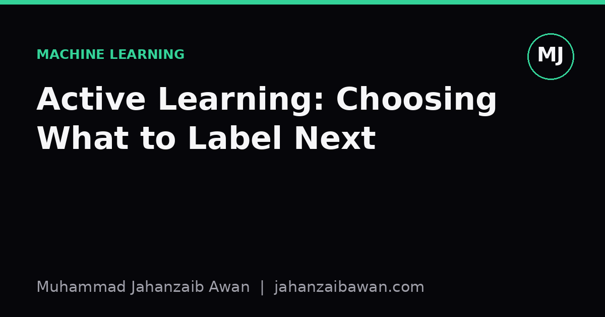

Active Learning: Choosing What to Label Next
Labelling budgets are always smaller than we want. Active learning is the discipline of spending them on the examples that actually change your model's mind.

The problem with labelling everything
Most supervised learning courses quietly assume that labels are free. In practice they never are. Someone has to read the document, listen to the audio, or draw the bounding box, and that someone charges by the hour or by the item. When you have ten thousand unlabelled examples and a budget for five hundred, the question stops being "how do we train a model" and becomes "which five hundred examples do we choose".
The naive answer is random sampling: pick five hundred examples uniformly and label them. This is not a bad baseline, and I would never trust an active learning result that failed to beat it convincingly. But random sampling treats every unlabelled example as equally informative, which is rarely true. A model that already classifies easy, common cases correctly gains almost nothing from ten more easy examples. It gains a great deal from the handful of cases sitting right on its decision boundary, the ones it genuinely cannot decide about.
Active learning formalises this intuition: instead of labelling a random or exhaustive set, you let the model itself help choose what gets labelled next. You train on what you have, ask the model which unlabelled points it is least confident about, send those to an annotator, retrain, and repeat. The goal is to reach a given accuracy with fewer labels, or to reach a higher accuracy with the same labelling budget.
Uncertainty sampling and why it works
The simplest and most widely used strategy is uncertainty sampling. For a classifier that outputs probabilities, you rank unlabelled examples by how close the predicted probability is to the decision threshold. For a binary classifier, an example predicted at 0.51 is far more interesting than one predicted at 0.98, because the model is essentially guessing on the first one and confident on the second.
Here is the intuition with numbers. Suppose you are building a spam filter and you have one thousand unlabelled emails. Your current model, trained on a small seed set, predicts that eight hundred of them are spam or not-spam with probability above 0.95 in either direction. The remaining two hundred sit between 0.4 and 0.6. If your budget is one hundred labels, spending them on a random slice of the one thousand emails will mostly land on the eight hundred easy ones, teaching the model very little it does not already know. Spending them on the two hundred ambiguous emails targets exactly the region where a single new label can shift the decision boundary and resolve real confusion.
This is why active learning curves in papers often show the same accuracy reached with a fraction of the labels compared to random sampling, particularly in the early rounds of training when the model has the most to learn. The gains tend to shrink as the model matures, because eventually there simply are not many genuinely ambiguous examples left to find.
There are more sophisticated strategies than plain uncertainty. Query by committee trains several models and picks examples where they disagree most. Expected model change estimates which label would most alter the model's parameters if added. Diversity-aware methods make sure you are not just picking a cluster of near-duplicate uncertain examples, which is a real risk: uncertainty sampling alone can happily hand you one hundred near-identical borderline cases instead of one hundred that cover different failure modes.
Where it goes wrong in practice
Active learning has a reputation problem, partly earned. It is easy to demonstrate impressive results on a clean benchmark and much harder to make it work reliably on messy, real data, and I think it is worth being honest about the failure modes rather than treating the method as a free lunch.
The first trap is sampling bias compounding on itself. If your seed model is biased, for instance because it was trained on an unrepresentative initial batch, then uncertainty sampling will query examples that are uncertain according to that biased model, which is not the same as examples that are informative in general. You can end up in a loop where the model keeps requesting labels near its own flawed boundary and never discovers an entire region of the input space it is getting confidently wrong. This is a genuine leakage-adjacent risk: your evaluation set has to be held out properly and never touched by the selection process, otherwise you will overestimate how well the strategy generalises.
The second trap is annotator noise. Uncertainty sampling deliberately seeks out the hardest examples for the model, and hard-for-the-model examples are frequently also hard-for-the-human examples: ambiguous images, borderline sentiment, edge cases that even domain experts disagree on. If your labelling pipeline does not track inter-annotator agreement, you can spend your entire budget acquiring noisy labels on exactly the examples where noise hurts most, since these are the points closest to the decision boundary.
The third trap is evaluation. To claim that active learning beat random sampling, you need a fixed, held-out test set that is never used for selection, and you need to compare learning curves across multiple random seeds, not a single lucky run. A single active learning run that beats a single random run by two points of accuracy tells you almost nothing; the variance in early-stage learning curves, when training sets are small, can easily be larger than that.
A practical takeaway
If you are labelling data under a real budget, start with a reasonably diverse random seed set, large enough that your model is not making pure guesses, then apply uncertainty sampling or a query-by-committee approach in batches, retraining after each round rather than after every single label, which is usually impractical anyway. Always keep a fixed held-out test set that no selection strategy ever sees, and always compare against random sampling as your baseline on the same splits.
Track inter-annotator agreement on the examples your strategy selects, since a spike in disagreement is a useful signal that you are near a genuinely ambiguous region rather than a labelling error. And be sceptical of any active learning result reported from a single run with no variance estimate; ask for multiple seeds before believing the gain is real. Used carefully, active learning will not replace good data collection, but it will make a limited labelling budget go a great deal further than treating every unlabelled example as equally worth your time.